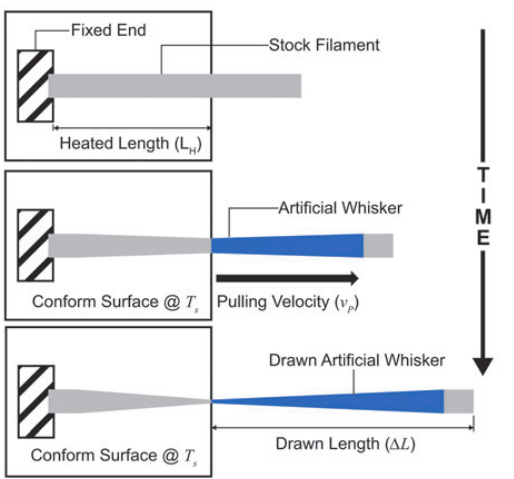
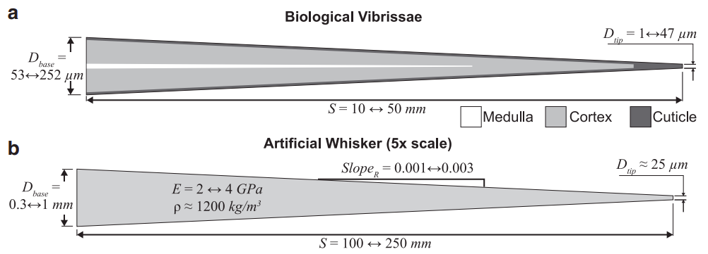
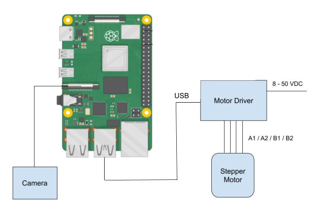
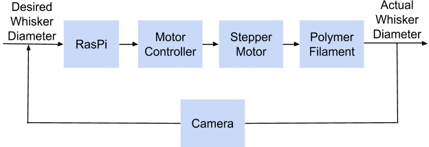
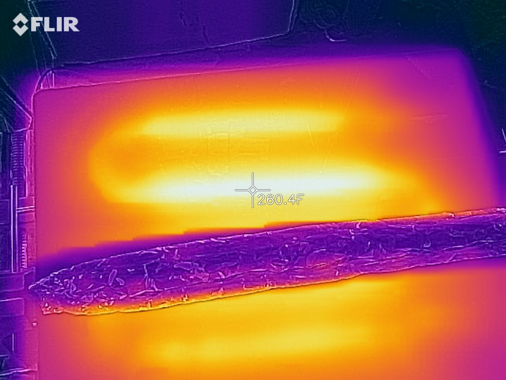
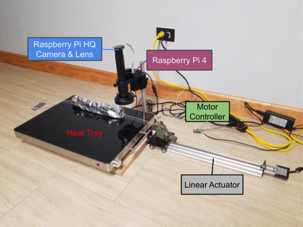
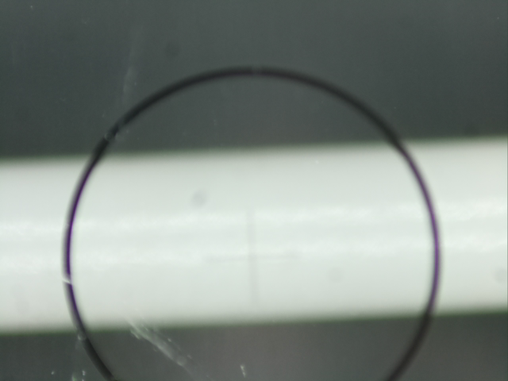
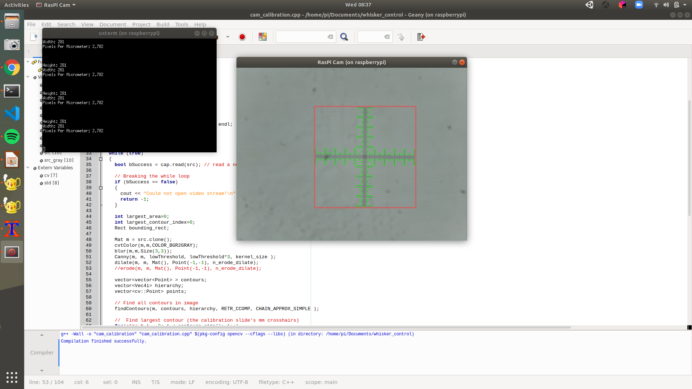

Github link

Project Obectives
The purpose of this project is to design a device that manufactures robotic whisker sensors by drawing polymer plastic filament from an oven. It must be able to inspect the diameter of the whisker and adjust the draw speed accordingly to match a specific geometric profile. This process must be quick and repeatable.
The image below shows how the shape of the filament develops over time. The heated length of the filament is brought to the plastic's glass transition temperature. Then the filament is pulled away from the oven by the drawing mechanism to create a taper.

The artificial whisker geometric profile imitates that of a biological whisker at a 5x scale (see image below). These dimensions drove the design specifications for the drawing mechanism.

Design Specifications
Given the dimensions of an artificial whisker, the mechanism must:
- Include a linear actuator that can draw a 250 mm whisker in approx. 2 mins
- Acheive a velocity range of 0.01 mm/s - 10 mm/s
- Include velocity feedback control to regulate the whisker taper
- Have computer vision to inspect the whisker diameter in micrometers
Materials
- V-Slot® NEMA 17 Linear Actuator Bundle (Lead Screw), 400m stroke
- NEMA 17 Stepper Motor
- Tic 36v4 USB Multi-Interface High-Power Stepper Motor Controller
- Raspberry Pi 4
- Raspberry Pi High Quality Camera
- Monocular Max 300x Zoom C-Mount Glass Lens
- Microscope Camera Table Stand
- Adjustable LED Ring Light
- Electric Warming Tray with Adjustable Temperature Control
- 24V 4A 100W Power Supply Adapter
- Cable Assembly 2.1mm ID, 5.5mm OD Jack to Wire Leads
- FLIR ONE Gen 3 Thermal Camera Smart Phone Attachment
- Microscope Camera Calibration Slide Ruler
- Low-Friction Tape Made with Teflon
System Design
A block diagram of the system is depicted below. The Raspberry Pi controls the velocity of the lead screw linear actuator via the Tic motor controller. A High Quality Raspberry Pi camera is connected to the RasPi.

This setup allows the device to perform the following closed control loop. In order to acheive the proper whisker taper, the RasPi is provided a desired whisker diameter and sends the Tic a command to speed up or slow down the motor velocity based on the camera's examination of the whisker.

A 12" hollow cylinder of heavy duty alumnium foil was created for the filament to travel through in order to heat up to its glass transition temperature. The heating element within the heat tray was found using a thermal camera smart phone attachment (see image below), and the aluminum foil cylinder was placed above and in parallel with one fold of the heating element.

The finished setup looks like this:

Computer Vision
In order to accurately measure the whisker diameter, the camera and lens must be first focused on a calibration slide's 1mm x 1mm reticle stacked on top of a sample of the plastic filament, as shown in the image below.

Next, I used the script cam_calibration.cpp, which can be found on my GitHub, to measure the reticle in pixels and calculate pixels/μm (displayed below). This project is still a work in progress, so the next step is to finish the script whisker.cpp which takes the pixels/μm constant, measures the diameter of the whisker section that is directly outside the oven, and performs the velocity control loop.
